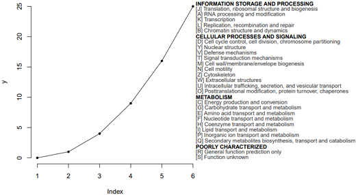

Tips: 看不清请刷新，换个颜色再看。
1. 比较干净的背景: +theme_bw(); 最干净的背景: +theme_classic()
2. 参数的解释: 生物慕课网
3. 本页面最底部有生信QQ群号，欢迎加入讨论，严禁广告。

#############################
library(ggplot2)
library(reshape2)
#示例数据：某基因在对照和肿瘤样本中的表达量。
d1=data.frame(
control=c(10,20,30,40,30,60,20,40,20,20,10,20,30,40,30,40,20,40,20,20),
tumor=c(50,70,40,60,80,90,40,50,70,80,50,70,40,60,80,90,40,50,70,80)
);
# 数据框重塑，数据合并为一列，添加分类列
d2=melt(d1,
variable.name="type",#新变量的名字
value.name="value" #值得名字
);
d2
######## 开始画图1 箱线图 + 散点图 done
ggplot(d2,aes(factor(type), value))+
geom_boxplot()+
geom_jitter()
######## 开始画图2 带误差bar的柱状图 + 散点图 done
#http://www.cookbook-r.com/Manipulating_data/Summarizing_data/
## Summarizes data.
## Gives count, mean, standard deviation, standard error of the mean, and confidence interval (default 95%).
## data: a data frame.
## measurevar: the name of a column that contains the variable to be summariezed
## groupvars: a vector containing names of columns that contain grouping variables
## na.rm: a boolean that indicates whether to ignore NA's
## conf.interval: the percent range of the confidence interval (default is 95%)
summarySE = function(data=NULL, measurevar, groupvars=NULL, na.rm=FALSE,
conf.interval=.95, .drop=TRUE) {
library(plyr)
# New version of length which can handle NA's: if na.rm==T, don't count them
length2 = function (x, na.rm=FALSE) {
if (na.rm) sum(!is.na(x))
else length(x)
}
# This does the summary. For each group's data frame, return a vector with
# N, mean, and sd
datac = ddply(data, groupvars, .drop=.drop,
.fun = function(xx, col) {
c(N = length2(xx[[col]], na.rm=na.rm),
mean = mean (xx[[col]], na.rm=na.rm),
sd = sd (xx[[col]], na.rm=na.rm)
)
},
measurevar
)
# Rename the "mean" column
datac = rename(datac, c("mean" = measurevar))
datac$se = datac$sd / sqrt(datac$N) # Calculate standard error of the mean
# Confidence interval multiplier for standard error
# Calculate t-statistic for confidence interval:
# e.g., if conf.interval is .95, use .975 (above/below), and use df=N-1
ciMult = qt(conf.interval/2 + .5, datac$N-1)
datac$ci = datac$se * ciMult
return(datac)
}
# http://www.cookbook-r.com/Graphs/Plotting_means_and_error_bars_(ggplot2)/
d3 = summarySE(d2, measurevar="value", groupvars=c("type"))
d3
ggplot(d3, aes(x=type, y=value)) +
geom_bar(aes(fill=type),position=position_dodge(), stat="identity", width=0.5) +
geom_errorbar(aes(ymin=value-ci, ymax=value+ci),
width=.2, # Width of the error bars
position=position_dodge(.9))+
geom_jitter(data=d2,aes(type,value), width=0.15) +
ylab( expression(paste( italic("Sox2")," Expression(normalization)") ) )
#ylab("Sox2 Expression\n(normalization)")

# V2.0 去掉图中文字的red/green glow
#怎么处理线性拟合r和p值
#1.1造数据
#x=data.frame(
# a=c(1,2,3,4,5),
# b=c(1,2,4,5,6)
#)
#1.2 抽样生成数据
library(dplyr)
set.seed(1)
sdata=sample_n(mtcars,100,replace=T)
x=data.frame(
a=sdata$mpg,
b=sdata$disp,
clazz=sdata$gear #分类变量
)
#方法1：用包计算r和p
#library(Hmisc)
#rs=rcorr(x$a,x$b, type="pearson")
#rs;str(rs)
#r=rs$r[2];r #[1] -0.8427099
#p=rs$P[2];p #[1] 0
#r0=round(r,2);r0 #[1] -0.84
#
#方法2：基础统计命令，计算r和p
#cor(x$a,x$b) #[1] -0.8427099
ts=cor.test(x$a,x$b); ts
str(ts)
p=ts$p.value;p #[1] 4.202888e-28
r=ts$estimate[['cor']];r#[1] -0.8427099
r0=round(r,2);r0
# 保留两位有效数字
#https://stackoverflow.com/questions/39623636/forcing-r-output-to-be-scientific-notation-with-at-most-two-decimals
p0=formatC(p, format = "e", digits = 2)
p0
#可视化结果
#plot(x$a,x$b)
library(ggplot2)
library(cowplot)
g=ggplot(data=x,aes(a,b))+
geom_smooth(method='lm', se=F)+ #se=F不要置信区间的阴影
geom_text(data=data.frame(), aes(x=16,y=15,label=paste0("r = ",r0,"\n p = ",p0)))+
theme_cowplot() + #除掉主题背景阴影
xlab( expression(paste( italic("CD8A")," expression") ) )+
ylab( expression(paste( italic("ITGAE")," expression") ) )
g+geom_point() #一般图
g+geom_point(aes(color=factor(clazz)))+ #使用分类变量后
scale_color_discrete("type")

#目的: 给出数据矩阵，计算gene1和其余gene的相关系数，并画cor的heatmap。
# v0.1
#pheatmap 帮助文档 https://www.jianshu.com/p/1c55ea64ff3f
source("https://bioconductor.org/biocLite.R")
#biocLite("WGCNA")
#biocLite("ggplot2")
#biocLite("dplyr")
#biocLite("Seurat")
#biocLite("monocle")
setwd("C:\\Users\\DELL\\Desktop")
################
#read file H
msiH=read.csv("MSI-h.csv",row.names = 1)
msiH[1:3,1:3]
dim(msiH) #[1] 45 135
################
#read file
msiM=read.csv("MSIL-MSS.csv",row.names = 1)
msiM[1:3,1:3]
dim(msiM) #[1] 199 135
#check 重复项
genelist=colnames(msiM);genelist
#################
#defin function
getCorDF=function(msi){
#cor.test
ido1=msi$IDO1
df=NULL
for(i in 3:ncol(msi)){
data2=msi[,i]
symbol=colnames(msi)[i]
rs=cor.test(ido1, data2)
p=rs$p.value
correlation=as.numeric(rs$estimate)
tmp_df=data.frame(
symbol=symbol,
p=p,
correlation=correlation
)
#
df=rbind(df, tmp_df)
}
return(df)
}
df.h=getCorDF(msiH)
dim(df.h) #[1] 133 2
head(df.h)
row.names(df.h)=df.h$symbol
#df.h=df.h[,-1]
df.m=getCorDF(msiM)
dim(df.m) #[1] 133 2
row.names(df.m)=df.m$symbol
#df.m=df.m[,-1]
head(df.m)
cDF=data.frame(
symbol=row.names(df.m),
"MSI_H"=df.h$correlation,
"NON_MSI_H"=df.m$correlation,
row.names = 1
)
head(cDF)
dim(cDF) #[1] 133 2
########################
#heatmap
########################
library(pheatmap)
# 构建列 注释信息
type=read.csv("type.csv")
head(type)
dim(type) #[1] 133 2
annotation_col = data.frame(
#CellType = factor(rep(c("CT1", "CT2","CT3", "CT4","CT5"), 27))
type=type$type
)
rownames(annotation_col) = rownames(cDF) #type$sample # paste("Test", 1:10, sep = "")
head(annotation_col)
#
# 自定注释信息的颜色列表
ann_colors = list(
#Time = c("white", "firebrick"),
type = c("Act CD4" = "#FF81F2", "Act CD8" = "#00B9FF","HLA" = "#39B54A",
"immune checkpoint" = "#FF0000","Tem CD4" = "#FF8B99","Tem CD8" = "#0000FF",
"Treg" = "#FF8000")
)
head(ann_colors)
# pheatmap
library(Cairo)
CairoPDF("sunjiaxin_10_col.pdf",width=25,height=3)
pheatmap(t(cDF), cluster_rows=F,#是否聚类 row
cluster_cols=T, #是否聚类 列
#display_numbers = TRUE,number_color = "blue", #标上p值
annotation_col = annotation_col, #列 注释
annotation_colors = ann_colors,
angle_col=90,fontsize=10, #角度，字号
border=FALSE #没有边框
)
dev.off()

# V2.0 修改背景颜色为白色
#http://agetouch.blog.163.com/blog/static/22853509020161194123526/
# https://www.ncbi.nlm.nih.gov/geo/query/acc.cgi?acc=GSE1323
# Using ggplot2 for volcano plots 使用ggplot2画火山图
library(ggplot2)
#读取数据 #data download from GEO2R result
setwd("C:\\Users\\Administrator\\Desktop")
dif=read.table(file="Primary Tumor_Normal Colon.txt",header=T,row.names=1)
dif[1:3,1:4]
#添加显著与否标签
no_of_genes=nrow(dif);no_of_genes #4653
dif$threshold = as.factor(abs(dif$logFC) > 2 & dif$P.Value < 0.05/no_of_genes)
#画火山图
g = ggplot(data=dif, aes(x=logFC, y=-log10(P.Value), colour=threshold)) +
geom_point(alpha=0.4, size=1.75) +
#opts(legend.position = "none") +
theme(legend.title=element_blank()) +
scale_colour_hue(labels=c("Not sig.","Sig."))+
#xlim(c(-10, 10)) + ylim(c(0, 15)) +
xlab("log2[fold change]") + ylab("-log10[p-value]") +
theme_bw()+ # 背景色淡化
labs(title="Volcano plot")
g
#只标注显著基因的基因名
# 选出一部分基因：FC大且p小的基因
dd_text = dif[(abs(dif$logFC) > 2) & (dif$P.Value < 0.05/no_of_genes),]
head(dd_text)
#添加文字-基因名
g + geom_text(data=dd_text, aes(x=logFC, y=-log10(P.Value), label=dd_text$Gene.symbol), colour="black")
#为了防止遮挡，建议使用包添加文字
library(ggrepel)
g + geom_text_repel(data=dd_text, aes(x=logFC, y=-log10(P.Value), label=dd_text$Gene.symbol), colour="black")
# 加载所需的R包
library(ggplot2)
library(pheatmap)
library(reshape2)
# 读取测试数据
Input =("
Stage1_R1 Stage1_R2 Stage2_R1 Stage2_R2 Stage3_R1 Stage3_R2
Unigene0001 -1.1777172 -1.036102 0.8423829 1.3458754 0.1080678 -0.08250721
Unigene0002 1.0596877 1.490939 -0.7663244 -0.6255567 -0.5333080 -0.62543728
Unigene0003 0.9206594 1.575844 -0.7861697 -0.3860003 -0.5501094 -0.77422398
Unigene0004 -1.3553173 -1.145970 0.2097526 0.7059886 0.9516353 0.63391053
Unigene0005 1.0134516 1.445897 -0.9705129 -0.8560422 -0.2556562 -0.37713783
Unigene0006 0.8675939 1.575735 -1.0120718 -0.5856459 -0.2821991 -0.56341216
")
data = read.table(textConnection(Input), header=TRUE,row.names=1)
##
#因为数据少，所以随便倍增一些数据。真实数据请跳过这一步
data=rbind(data,data*0.8) #造数据
data=rbind(data*0.9,data*(-0.8) ) #造数据
data=rbind(data*(-0.4),data*0.6) #造数据
row.names(data)=paste0('Unigene000',seq(1:nrow(data)) )#造数据
#end
#
#data = read.table("test.txt",header = T, row.names = 1,check.names = F)
# 查看数据基本信息
head(data)#View(data)
# 使用pheatmap绘制基因表达热图，并进行层次聚类分成不同的cluster
p = pheatmap(data, border=F, #不要描边
show_rownames = F, #不显示基因名
#cellwidth =40, #设置宽度
#scale ='row', #对每一行z标准化
cutree_rows = 6, #对row聚类时，设置加几个白横分割线
cluster_cols = F, #不对列聚类
gaps_col = c(2,4,6), #对列分割，仅用于不对列聚类的时候
angle_col = 45, #底部的字旋转的方向
fontsize = 12)
# 获取聚类后的基因顺序
row_cluster = cutree(p$tree_row,k=6)
# 对聚类后的数据进行重新排序
newOrder = data[p$tree_row$order,]
newOrder[,ncol(newOrder)+1]= row_cluster[match(rownames(newOrder),names(row_cluster))]
colnames(newOrder)[ncol(newOrder)]="Cluster"
# 查看重新排序后的数据
head(newOrder)
# 查看聚类后cluster的基本信息
unique(newOrder$Cluster)
#[1] 5 1 3 2 6 4
#统计每个cluster几个基因
table(newOrder$Cluster)
#1 2 3 4 5 6
#4 20 12 2 8 2
#
# 将新排序后的数据保存输出
newOrder$Cluster = paste0("cluster",newOrder$Cluster)
#write.table(newOrder, "expr_DE.pheatmap.cluster.txt",sep="\t",quote = F,row.names = T,col.names = T)
#
# 绘制每个cluster的基因聚类趋势图
newOrder$gene = rownames(newOrder)
head(newOrder)
# Stage1_R1 Stage1_R2 Stage2_R1 Stage2_R2 Stage3_R1 Stage3_R2 Cluster gene
#Unigene00032 0.4577851 0.6440856 -0.3310521 -0.2702405 -0.2303891 -0.2701889 cluster5 Unigene00032
#Unigene00033 0.3977249 0.6807646 -0.3396253 -0.1667521 -0.2376473 -0.3344648 cluster5 Unigene00033
#
#
library(reshape2)
# 将短数据格式转换为长数据格式
data_new = melt(newOrder)
head(data_new)
# Cluster gene variable value
#1 cluster5 Unigene00032 Stage1_R1 0.4577851
#2 cluster5 Unigene00033 Stage1_R1 0.3977249
# 绘制基因表达趋势折线图
ggplot(data_new,aes(variable, value, group=gene)) + geom_line(color="gray90",size=0.8) +
geom_hline(yintercept =0,linetype=2) +
stat_summary(aes(group=1),fun.y=mean, geom="line", size=1.2, color="#c51b7d") +
facet_wrap(Cluster~.) +
labs(x="Stage", y='Expression')+
theme_bw() +
theme(panel.grid.major = element_blank(), panel.grid.minor = element_blank(),
axis.text = element_text(size=8, face = "bold"),
axis.text.x=element_text(angle=60, hjust=1), #x标签旋转60度
strip.text = element_text(size = 8, face = "bold"))
#
左: R原生画图; 右: ggplot2;
##data: 每群细胞中，各周期细胞数
mydatatxt="
G1S S G2M M MG1
BC_0 28 10 17 19 13
BC_1 21 13 7 13 28
HeLa_normal 11 3 3 3 9
HeLa_sync 3 10 7 7 0
"
#从字符串中读取数据框
tbl1=read.table(text=mydatatxt, header=T) # text设置了，file就要留空
tbl1=tbl1[,c(5,4,3,2,1)] #reorder columns
tbl1
#percentage
tbl2=apply(tbl1,1,function(x){ 100*x/sum(x)})
cellNames=colnames(tbl2)
colnames(tbl2)=NULL
tbl2
#画条状图
library(RColorBrewer)
col=RColorBrewer::brewer.pal(n = 5,name = "Set2");
col=rev(col)
barplot(1:5,col=col)
#plot
par(mar=c(5, 4, 4, 5) + 0.1)
posX=barplot(as.matrix(tbl2), col=col,
#names.arg=(paste(substr(FirstName,1,1),".",LastName)), #设定横坐标名称
names.arg=NULL,
space=0.2, #条形间距
#xlab="Individual #",
ylab="Percentage",
legend.text = rownames(tbl2),
args.legend=list(x="right", #border=NA, #不要图例小方块描边
box.col="white", inset=-0.25,bty="n"),
border=NA)
#加底部x坐标标签
y = -0.05;
text(posX, -5, labels=cellNames, adj=1, srt=30, xpd=TRUE) #adj标签与轴的距离，srt设置xlable角度
#box()
## 使用ggplot2的版本。
mydatatxt="
G1S S G2M M MG1
BC_0 28 10 17 19 13
BC_1 21 13 7 13 28
HeLa_normal 11 3 3 3 9
HeLa_sync 3 10 7 7 0
"
#从字符串中读取数据框
tbl1=read.table(text=mydatatxt, header=T) # text设置了，file就要留空
#转为百分数
tbl2=as.data.frame(apply(tbl1, 1, function(x){x/sum(x)*100}) )
tbl2$cycle=rownames(tbl2) #添加一列：行名
tbl2
# BC_0 BC_1 HeLa_normal HeLa_sync cycle
#G1S 32.18391 25.609756 37.93103 11.11111 G1S
# 变为一列
dt2=reshape2::melt(tbl2,
id.vars='cycle', #要保留的id变量(源)
variable.name = "type", #melt后变量名列的名字(目标)
#measure.vars=c(), #要melt的变量名(列名)(源)
value.name="pct"); #melt后的数据列名字(目标)
head(dt2)
# cycle type pct
#1 G1S BC_0 32.18391
#定义图例顺序
dt2$cycle=factor(dt2$cycle, levels=c('G1S','S','G2M','M','MG1'))
ggplot(dt2, aes(x=type,y=pct, fill=cycle ))+
geom_bar(stat='identity')+
theme_bw()+
#+theme(legend.position = "none")+ # 不显示坐标轴
labs(x="")+
theme(axis.text.x=element_text(angle=60, hjust=1,size=8,color="black") ) #坐标轴文字旋转60度

数据特点：范围是0-1，但是0.5以下很稀疏，峰值在0.8-0.9之间，1也是一个峰。
由于颜色变量偏斜太厉害，直接使用ggplot2，渐变色只能指定3种颜色，偏斜导致整体颜色太淡。
目前不会使用ggplot2设置4种颜色的渐变色，只好手动用R原生函数绘制了。
head(dif)
# gene cellNumber meanDPAU sdDPAU RNACounts cpm totalCell domCell nonDomCell ratio
#RPL8 RPL8 225 99.86553 0.3462266 712259 492539.3 225 225 0 1.0000000
#RPL3 RPL3 225 99.73653 0.9470744 542531 369992.2 225 223 2 0.9911111
#...
#fig1: 查看分布图，略。
hist(dif$ratio, n=200)
abline(v=0.9, col='red', lty=2)
#
#fig2: 略。(点的颜色普遍太淡)
library(ggplot2)
ggplot(dif, aes(meanDPAU, sdDPAU, color=ratio))+
geom_point(size=0.2)+
scale_color_gradient2('xx\nRatio', low="navy", mid='white', high="red", midpoint =0.7)+
theme_bw()
#fig3: 见上图
# step0: 设置颜色。色彩向量取值范围是0-1，但是数据偏斜向1。0.5以下很稀疏。
bk0=seq(0.0,0.39,by=0.01) #almost non data
bk1=seq(0.4,0.59,by=0.01)
bk2=seq(0.6,0.79,by=0.01)
bk3=seq(0.8,1,by=0.01)
#
colors = c(
colorRampPalette(colors = c("navy","blue"))(length(bk0)),
colorRampPalette(colors = c("blue","#00BFFF"))(length(bk1)),
colorRampPalette(colors = c("#00BFFF","#FFE9E9"))(length(bk2)),
colorRampPalette(colors = c("#FFE9E9","red"))(length(bk3))
)
print( length( seq(0,1,0.01) ) )
print( length(colors) )
#
library(Cairo)
dev.off() #for jupyter bug
CairoPDF('6_9_domi__testing__.pdf', width=4.5,height=4)
#页面布局
mat = matrix(c(1,1,1,1,1,1,2,2), nrow=1, byrow=TRUE);
layout(mat)
############
#step1: plot
par(mar=c(4.5,4.5,4,0)) #bottom, left, top, right
plot(NULL, xlim=c(0,100), ylim=c(0,55), type='n',
xlab="Mean of xx",
ylab="Standard deviation of xx",
main="Colored by xx ratio")
for(i in 1:nrow(dif)){
v=round(dif$ratio[i],2)*100
color=colors[v]
points(dif[i,'meanDPAU'], dif[i, 'sdDPAU'],
pch=20, cex=0.05, col=color)
}
############
#step2: 用image函数画color bar
par(mar=c(13,2.5,6,5)) #bottom, left, top, right
n=100
image(t(matrix(0:n)),col=colors,
xaxt="n", yaxt="n", cex = 1.5,
mgp=c(0,1,0),
#main="Dominant\ncell ratio",
bty='n',#box type
xlab = "", ylab = ""
)
text(x=0,y=1.1,labels=c("xx\nratio"),xpd=T)
axis(4,at=seq(0,1,by=0.2),
labels=seq(0,1,0.20),
cex.axis=1, #坐标轴刻度字体大小
#col.axis="red", #坐标轴刻度字体颜色
#col="purple", #坐标轴颜色
lwd=1, #坐标轴刻度粗细
las=0)#las=0垂直于轴，2平行于轴
#
dev.off()
组合图，比如要求共用x坐标轴时，很难用ggplot2来处理，这时候可以考虑原生绘图，相当给力！
示例: 顶部barplot，底下百分数barplot，共用x坐标轴，所以要一一对应。

library(Cairo)
# make data
dt0=diamonds[1:1000,]
head(dt0)
dt1=table(dt0$cut, dt0$color)
dt1
CairoPDF('barplot_combine.pdf', width=4,height=4) #要在布局代码之前保存
#页面布局
mat = matrix(c(1,1,2,2,2,2), ncol=1, byrow=T);mat
layout(mat)
### fig1 barplot
dt.rsum=apply(dt1, 1, sum)
dt.rsum
par(mar=c(1,4,4,6)+ 0.1) #bottom, left, top, right
barplot(as.numeric(dt.rsum), ylab="number",
names.arg=NULL,border=NA,space=0.2)
#### fig2 percentage barplot
tbl2=apply(dt1,1,function(x){ 100*x/sum(x)})
cellNames=colnames(tbl2)
colnames(tbl2)=NULL
tbl2
#画条状图
library(RColorBrewer)
col=RColorBrewer::brewer.pal(n = nrow(tbl2),name = "Set2");
col=rev(col)
#barplot(1:5,col=col)
#plot
par(mar=c(5, 4, 0, 6) + 0.1) ##bottom, left, top, right
posX2=barplot(as.matrix(tbl2), col=col,
#names.arg=(paste(substr(FirstName,1,1),".",LastName)), #设定横坐标名称
names.arg=NULL,
space=0.2, #条形间距
#xlab="Individual #",
ylab="Percentage",
legend.text = rownames(tbl2),
args.legend=list(x="right", border=NA, #不要图例小方块描边
box.col="black", inset=-0.1,bty="n"),
border=NA)
# 加底部x坐标标签
y2 = par('usr')[3]-2;
text(posX2, y2, labels=cellNames, adj=1, srt=30, xpd=TRUE) #adj标签与轴的距离，srt设置xlable角度
#box()
dev.off()
## 绘图区域的大小
# par('usr') #c(x1, x2, y1, y2)
#[1] -0.032 6.232 -1.000 100.000
#附: fig1 barplot 如果想在bar顶部标记上数字和百分比
dt.rsum=apply(dt1, 1, sum);dt.rsum
dt.rsum=as.numeric(dt.rsum);dt.rsum
par(mar=c(1,4,5,6)+ 0.1) #bottom, left, top, right
posX=barplot(dt.rsum, ylab="number",
ylim=c(0,400),
names.arg=NULL,border=NA,space=0.2)
text(x=posX, y=dt.rsum+20, label=paste0(dt.rsum, '\n(', round(dt.rsum/sum(dt.rsum),2)*100,'%)' ),
font=1,cex=0.7)
感觉调试的影响有可能大于生物学意义本身，只能看大趋势，细节的起伏很大程度上被平滑化掩盖掉了。
1.对于细胞，按照monocle等伪时间顺序排列。
2.对于基因，使用了log2(cpm+1)作为表达量，按照表达量最高的前20%细胞的中位数排序，选前几十个基因。
3.对每个基因，使用 LOESS 做平滑化后的基因表达值做heatmap。
对本模拟数据而言，span=1左右平滑化似乎最优。
目标图片 monocle at github:
分化过程图 | 2个分化方向 |
下面是本代码效果图。
#调试和探索函数
check=function(df){
print(dim(df))
print(head(df))
}
# 负二项分布，模拟基因的表达，比正态分布更优。
a1=c(); a2=c()
for(i in 1:1000){
w=rnbinom(cellNumber, size = 100, prob = 0.1)
#plot(w)
a1=c(a1, mean(w) )
a2=c(a2, sd(w))
}
plot(a1,a2)
w=rnbinom(cellNumber, size = 100, prob = 0.1)
hist(w)
############### color bar from monocle::plot_pseudotime_heatmap ##############
# 这个 color bar 来自于monocle，画热图效果很好。该渐变色原理和细节请参考 http://www.biomooc.com/R/R-color.html#2_3
# fn1
table.ramp = function (n, mid = 0.5, sill = 0.5, base = 1, height = 1) {
x <- seq(0, 1, length.out = n)
y <- rep(0, length(x))
sill.min <- max(c(1, round((n - 1) * (mid - sill/2)) + 1))
sill.max <- min(c(n, round((n - 1) * (mid + sill/2)) + 1))
y[sill.min:sill.max] <- 1
base.min <- round((n - 1) * (mid - base/2)) + 1
base.max <- round((n - 1) * (mid + base/2)) + 1
xi <- base.min:sill.min
yi <- seq(0, 1, length.out = length(xi))
i <- which(xi > 0 & xi <= n)
y[xi[i]] <- yi[i]
xi <- sill.max:base.max
yi <- seq(1, 0, length.out = length(xi))
i <- which(xi > 0 & xi <= n)
y[xi[i]] <- yi[i]
height * y
}
# fn2
rgb.tables=function (n, red = c(0.75, 0.25, 1), green = c(0.5, 0.25, 1), blue = c(0.25, 0.25, 1)) {
rr <- do.call("table.ramp", as.list(c(n, red)))
gr <- do.call("table.ramp", as.list(c(n, green)))
br <- do.call("table.ramp", as.list(c(n, blue)))
rgb(rr, gr, br)
}
# fn3
blue2green2red=function (n) {
rgb.tables(n, red = c(0.8, 0.2, 1), green = c(0.5, 0.4, 0.8), blue = c(0.2, 0.2, 1))
}
bks <- seq(-3.1,3.1, by = 0.1)
hmcols <- blue2green2red(length(bks) - 1)
hmcols
# view the color bar
barplot(rep(1, length(hmcols)), col=hmcols, border = NA, space=0, axes=F)
############### make data: 造数据，如果时真实数据，跳过这一步 ##############
makeData=function(){
df=NULL
set.seed(2020)
for(i in 1:geneNumber){
#a=rnorm(cellNumber, mean = 3, sd = 5)
a=rnbinom(cellNumber, size = 1000, prob = 0.1) #负二项分布
names(a)=paste0('cell', 1:cellNumber)
df=rbind(df, a)
}
#rownames(df)=paste0('gene', 1:geneNumber)
dim(df)
df[1:10,1:5]
## 倍增仅
df=rbind(df,df*0.8) #造数据
df=rbind(df*1.9,df*(-1.8) ) #造数据
df=rbind(df*(-0.4),df*0.6) #造数据
#
#负值变正数
df=apply(df, 2, function(x){
ifelse(x<0, -10*x, 10*x)
})
df=as.data.frame(df)
# 要去掉全是0的行
keep=apply(df,1,sum)>0
df=df[keep,]
row.names(df)=paste0('gene',seq(1:nrow(df)) )#造数据
return(df)
}
#
cellNumber=100
geneNumber=300
df2=makeData()
dim(df2)
df2[1:10,1:5]
# normalization
df2.cpm=apply(df2, 2, function(x){1e6*x/sum(x)})
df2.log2cpm=apply(df2.cpm, 2, function(x){log2(x+1)})
dim(df2.log2cpm)
head(df2.log2cpm[,1:4])
library(pheatmap)
pheatmap( df2, scale='row')
pheatmap( df2.log2cpm, scale='row') #这热图没法看
###
## step2: select genes, by expression
#筛选前10%细胞表达median值最高的10%的基因
median_df=NULL
i=1
for(gene in rownames(df2.log2cpm)){
i=i+1
#if(i>10)break;
tmp=as.numeric(df2.log2cpm[gene,])
tmp=tmp[order(-tmp)]
tmp.median=median(tmp[1: round(length(tmp)*0.1)])
median_df=rbind(median_df, data.frame(
gene=gene,
value=tmp.median,
sd=sd(tmp)
))
}
rownames(median_df)=median_df$gene
median_df=median_df[order(-median_df$value),]
check(median_df)
useGenes=rownames(median_df)[1:round(geneNumber*0.05)]
length(useGenes)
head(useGenes)
# 使用标准化后的数据
p=pheatmap(df2.log2cpm[useGenes,] , border_color = NA, scale='row',
color=hmcols, main="log2cpm")
#使用原始counts数据
#p=pheatmap(df2[useGenes,] , border_color = NA, scale='row',
# color=hmcols, main="raw counts")
#get cell order from heatmap, and reorder df
cellOrder=colnames(df2.log2cpm)[p$tree_col$order]
head(cellOrder)
df3=df2.log2cpm[,cellOrder]
head(df3[,1:4])
########################
## LOESS 平滑化
########################
##########
# test one gene
geneID=1
y1=df3[geneID,]
plot(y1, type='l')
#
addLine=function(span, color, ...){
y2=predict(loess(df3[geneID,] ~ seq(1, ncol(df3)), span=span))
lines(y2, type="l", col=color, ...)
}
addLine(0.1, 'green')
addLine(0.2, 'blue')
addLine(0.5, 'red') #差不多了
addLine(1, 'purple',lwd=2)
addLine(2, 'orange',lwd=2, lty=2)
addLine(8, 'grey',lwd=5, lty=2)
##########
## 批量化
testSpan=function(span=0.2){
df4=apply(df3, 1, function(x){
predict(loess(x ~ seq(1, length(x)), span=span))
})
df4=as.data.frame(t(df4))
colnames(df4)=colnames(df3)
dim(df3)
dim(df4)
head(df4[,1:5])
## heatmap again
p=pheatmap(df4[useGenes,] , border_color = NA, scale='row',
clustering_method='ward.D2',
cluster_cols = F,
show_colnames = F,
#gaps_col = c(60),
cutree_rows = 3,
color=hmcols, main=paste0("span=", span) )
return(p)
}
# test various span for perfect effect
testSpan(0.1)
testSpan(0.5)
testSpan(1) #效果可以
testSpan(1.5) #
testSpan(2) #效果可以
testSpan(4)
testSpan(8) #之后无变化
testSpan(16)
testSpan(32)
testSpan(100)
#
testSpan(0.2)
testSpan(0.3)
testSpan(0.4)
testSpan(0.5)#
testSpan(0.6)
testSpan(0.7)
testSpan(0.8)
testSpan(0.9)
# 重绘热图，add row annotation
p2=testSpan(2)
# 获取聚类后的基因顺序
row_cluster = cutree(p2$tree_row,k=3)
row_cluster
# 获取每个cluster的基因名字
gSet1=names(row_cluster[which(row_cluster==1)]) #示例
#
annote_row=data.frame(
gene=names(row_cluster),
Cluster=paste0("Cluster",unname(row_cluster)),
row.names = 1
)
annote_row$Cluster=as.factor(annote_row$Cluster)
head(annote_row)
## 这个自定义颜色必须是list，不能是df!!
annote_color=list(
Cluster=c('Cluster1'="#66C3A6", 'Cluster2'="#FD8D63",'Cluster3'="#FFD92F")
)
head(annote_row)
testSpan2=function(annote_row,annote_color, span=0.2){
df4=apply(df3, 1, function(x){
predict(loess(x ~ seq(1, length(x)), span=span))
})
df4=as.data.frame(t(df4))
colnames(df4)=colnames(df3)
dim(df3)
dim(df4)
head(df4[,1:5])
## heatmap again
p=pheatmap(df4[useGenes,] , border_color = NA, scale='row',
clustering_method='ward.D2',
cluster_cols = F,
show_colnames = F,
annotation_row = annote_row,
annotation_colors = annote_color,
#gaps_col = c(60),
cutree_rows = 3,
color=hmcols, main=paste0("span=", span) )
return(p)
}
testSpan2(annote_row,annote_color, span=2) #页码上面的示例图就是这一步的结果
目标图片: 2015 Cell, Drop seq, Figure 4 Cell-Cycle Analysis of HEK and 3T3 Cells Analyzed by Drop-Seq.
细胞周期相关基因 list: A complete list of cell-cycle regulated genes can be found in Table S2
原文是一段非常高质量的R代码，充分展示了如何嵌套使用apply家族函数、如何函数嵌套、如何定义输入和输出。
下文为了方便理解，把原来的嵌套函数拆开了。
# aim: scRNAseq to determine cell cycle.
# 缺陷: 这是对细胞系做的周期分类，没有考虑G0期。
# source: 2015 cell, drop seq;
# v0.3 fix filter line.
## 准备工作
#1. 定义资源的路径: infoPath
infoPath="/home/wangjl/data/cellLines/"
#basic information, like cycle gene list, RNA expression matrix, cell type info;
#2.下载周期相关基因列表，命名为 G1S.txt等5个文件，一个基因一行，不加引号。文件放到infoPath下。
#3. 你自己的单细胞转录组表达矩阵, row为基因，column为cell；
#4. cell information: 可选参数，用于对表达矩阵的column做筛选，也就是取细胞的子集。
# 经验:
#1. 一次对一种细胞做细胞周期鉴定，超过一个种类可能结果不准确;
#2. 如果细胞的一部分是(药物、刺激等)处理过的，那么用normal部分筛选基因后，对全部细胞做周期鉴定，否则会失真。
#3. 要保证矩阵不能有全是0的行。本例是3'测序，使用的是log(cpm+1)，如果是全长测序，可以使用log(tpm+1)或log(rpkm+1)
setwd("/home/wangjl/data/cellLines/cycle/")
outputRoot="BC_"
#load data: 表达counts矩阵
fname=paste0(infoPath,"BC_HeLa.225cells.count.V3.csv")
data=read.csv(fname,row.names = 1)
dim(data) #[1] 18679 225
data[1:4,1:4]
# c01ROW24 c01ROW35 c01ROW31 c05ROW02
#A1BG-AS1 0 0 0 0
#A2M 0 0 0 0
#helper: return cell phase names
getCellPhaseList=function(){
c('G1S', 'S','G2M','M','MG1');
}
#load data: 细胞类型
cellType=read.csv( paste0(infoPath,"cellInfo.txt"),row.names = 1)
head(cellType)
# geneNumber countsPerCell countsPerGene cellType
#c01ROW24 5693 1950601 342.6315 BC_syncMix
#c01ROW35 6768 3048970 450.4979 BC_syncMix
dim(cellType) #225 4
#获取细胞子集：BC
data2=data[,row.names(cellType[which( substr(cellType$cellType,1,3)=="BC_" ),])]
dim(data2) #[1] 18679 169
#只保留非0的行
keep=apply(data2>0,1,sum)>0
table(keep)
#FALSE TRUE
#403 18276
data2=data2[keep,] #filter out all 0 rows
dim(data2) #[1] 18276 169
#load data: 每个时期的gene set,和表达矩阵求基因交集
geneSets=list();
for(i in 1:length(getCellPhaseList() )){
setName=getCellPhaseList()[i]
print( paste(i, setName) )
tmpGenes=readLines( paste0(infoPath,setName,'.txt') )
print( length(tmpGenes) )
#和矩阵的列求交集
geneSets[[setName]]=intersect(tmpGenes, row.names(data2))
print( length(geneSets[[setName]])) #95
}
## begin
#step1: exclude genes cor<0.3 with mean of the set
geneSets2=list();
for(i in 1:length(getCellPhaseList() )){
#求G1S集合中的gene mean
setName=getCellPhaseList()[i] #'G1S';
print( paste(i, setName) )
setMean=apply(data2[geneSets[[setName]], ], 2,mean)
#head(setMean)
#每个基因和平均值求cor
tmpGenes=c()
for(g in geneSets[[setName]]){
rs=cor(t(data2[g,]), setMean)
#print( paste(g,rs) )
if(rs>=0.3){
tmpGenes=c(tmpGenes,g)
}
}
#[1] "ACD 0.324866931495592"
#[1] "ACYP1 0.0858240480040331"
#[1] "ADAMTS1 -0.128818193750771"
print( length(tmpGenes) )
geneSets2[[setName]]=tmpGenes
}
geneSets2
sum(sapply(geneSets2, function(x){length(x)})) #321
# step2: depth norm; log2 norm;
getNormalizedCts <- function ( cts ) {
#ctsPath
#cts <- read.table ( ctsPath , header = T , as.is = T )
apply ( cts , 2 , function ( x ) { log2 ( ( 10^6 ) * x / sum ( x ) + 1 ) })
}
normCts=getNormalizedCts(data2)
dim(normCts)
normCts[1:10,1:5]
#apply(normCts,2,sum)
#step3: calculate 5 phase scores each cell(mean of phase genes)
# Tested. Passed.
assignSampleScore <- function ( phaseGenesList , normCts ) {
scores <- lapply ( phaseGenesList , function ( pGenes ) {
print(length(pGenes) )
apply ( normCts , 2 , function ( x ) {
mean ( x [ pGenes ] )
} )
} )
do.call ( cbind , scores )
}
scoreMatrix <- assignSampleScore ( geneSets2 , normCts )
dim(scoreMatrix) #169 5
head(scoreMatrix)
# G1S S G2M M MG1
#c12ROW02 3.774424 3.742809 3.131765 3.524596 4.595119
#c12ROW03 3.274414 2.999720 3.231767 3.422519 5.221042
write.table ( scoreMatrix , paste ( outputRoot , "PhaseScores.txt" , sep = "" ) )
# pheatmap(scoreMatrix, scale='row', border_color = NA)
#step4: z-norm(each phase, then each cell)
# Tested. Passed.
getNormalizedScores <- function ( scoreMatrix ) {
norm1 <- apply ( scoreMatrix , 2 , scale )
normScores <- t ( apply ( t ( norm1 ) , 2 , scale ) )
rownames ( normScores ) <- rownames ( scoreMatrix )
colnames ( normScores ) <- colnames ( scoreMatrix )
normScores
}
normScores <- getNormalizedScores ( scoreMatrix )
head(normScores)
# G1S S G2M M MG1
#c12ROW02 -0.5587886 1.71406144 -0.767616785 0.012780937 -0.4004370
#c12ROW03 -1.0458011 -0.56059069 -0.005651298 0.002073499 1.6099696
write.table ( normScores , paste ( outputRoot , "PhaseNormScores.txt", sep = "" ) )
#pheatmap(normScores, scale='row', border_color = NA)
#画出每个细胞的各个周期打分
i=5;plot(normScores[i,],type='o',col=rainbow(i), main=rownames(normScores)[i])
i=8;plot(normScores[i,],type='o',col=rainbow(i), main=rownames(normScores)[i])
#step5: assign phase for each cell
getReferenceProfiles <- function () {
referenceProfiles <- list (
"G1S" = c ( 1 , 0 , 0 , 0 , 0 ) ,
"G1S.S" = c ( 1 , 1 , 0 , 0 , 0 ) ,
"S" = c ( 0 , 1 , 0 , 0 , 0 ) ,
"S.G2M" = c ( 0 , 1 , 1 , 0 , 0 ) ,
"G2M" = c ( 0 , 0 , 1 , 0 , 0 ) ,
"G2M.M" = c ( 0 , 0 , 1 , 1 , 0 ) ,
"M" = c ( 0 , 0 , 0 , 1 , 0 ) ,
"M.MG1" = c ( 0 , 0 , 0 , 1 , 1 ) ,
"MG1" = c ( 0 , 0 , 0 , 0 , 1 ) ,
"MG1.G1S" = c ( 1 , 0 , 0 , 0 , 1 ) ,
"all" = c ( 1 , 1 , 1 , 1 , 1 ) )
#referenceProfiles <- lapply ( referenceProfiles , function ( x ) { names ( x ) <- c ( "G1S", "S", "G2" , "G2M" , "MG1" ); x } )
referenceProfiles <- lapply ( referenceProfiles , function ( x ) {
names ( x ) <- c ( 'G1S', 'S','G2M','M','MG1' ); x } )
do.call ( rbind , referenceProfiles )
}
# Tested. Passed.
assignRefCors <- function ( normScores ) {
referenceProfiles <- getReferenceProfiles()
t ( apply ( normScores , 1 , function ( sampleScores ) {
apply ( referenceProfiles , 1 , function ( refProfile ) {
cor ( sampleScores , refProfile ) } )
} ) )
}
# Tested. Passed.
getPhases <- function ( ) {
#phases <- c ( "G1S", "S", "G2" , "G2M" , "MG1" )
phases <- c ( 'G1S', 'S','G2M','M','MG1' )
names ( phases ) <- phases
phases
}
# Tested. Passed.
assignPhase <- function ( refCors ) {
phases <- getPhases ()
apply ( refCors [ ,phases ] , 1 , function ( x ) {
phases [ which.max ( x ) ]
} )
}
###### Score cycle similarity
refCors <- assignRefCors ( normScores )
head(refCors)
assignedPhase <- assignPhase ( refCors )
head(assignedPhase)
#
table(assignedPhase)
# assignedPhase
#G1S G2M M MG1 S
#49 24 32 41 23
#
getDFfromNamed=function(Namedxx){
data.frame(
id=attr(Namedxx,'names'),
val=unname(Namedxx),
row.names = 1
)
}
rs=getDFfromNamed(assignedPhase)
head(rs)
#保存标签结果
write.csv(rs,paste ( outputRoot , "cellCycle_phase.csv" , sep = "" ) )
#
#和第四步比较呢？
i=5;plot(normScores[i,],type='o',col=rainbow(i), main=rownames(normScores)[i])
#目测几个，就是求最高值
#
#step6 ####### Order cells
# Tested. Passed.
orderSamples <- function ( refCors , assignedPhase) {
phases <- getPhases()
orderedSamples <- list()
for ( phase in phases ) {
phaseCor <- refCors [ assignedPhase == phase , ]
phaseIndex <- which ( colnames ( phaseCor ) == phase )
if ( phaseIndex == 1 ) { preceding = ncol ( phaseCor ) - 1 } else { preceding <- phaseIndex - 1 }
if ( phaseIndex == ncol ( phaseCor ) - 1 ) { following = 1 } else { following <- phaseIndex + 1 }
earlyIndex <- phaseCor [ , preceding ] > phaseCor [ , following ]
earlyCor <- subset ( phaseCor , earlyIndex )
earlySamples <- rownames ( earlyCor ) [ order ( earlyCor [ , preceding ] , decreasing = T ) ]
lateCor <- subset ( phaseCor , ! earlyIndex )
lateSamples <- rownames ( lateCor ) [ order ( lateCor [ , following ] , decreasing = F ) ]
orderedSamples [[ phase ]] <- c ( earlySamples , lateSamples )
}
refCors [ do.call ( c , orderedSamples ) , ]
}
#
ordCor <- orderSamples ( refCors , assignedPhase )
write.table ( cbind ( ordCor , "assignedPhase" = assignedPhase [ rownames ( ordCor ) ] ) ,
paste ( outputRoot , "PhaseRefCor.txt" , sep = "" ) )
#
#step7 ####### Plot
# Passed.
plotCycle <- function ( phaseCorsMatrix, ... ) {
library("pheatmap")
library("RColorBrewer")
breaks <- seq ( -1 , 1 , length.out = 31 )
heatColors <- rev (brewer.pal ( 9, 'RdBu'))
heatColors <-colorRampPalette(heatColors)
colorPallete <- heatColors((length ( breaks ) - 1 ))
# create heatmap
hm.parameters <- list(phaseCorsMatrix, border_color=NA,
color = colorPallete,
breaks = breaks,
cellwidth = NA, cellheight = NA, scale = "none",
treeheight_row = 50,
kmeans_k = NA,
show_rownames = T, show_colnames = F,
#main = "",
clustering_method = "average",
cluster_rows = FALSE, cluster_cols = FALSE,
clustering_distance_rows = "euclidean",
clustering_distance_cols = NA ,
legend = T , annotation_legend = F,... )
do.call("pheatmap", hm.parameters )
}
phases <- getPhases()
#jpeg ( paste ( outputRoot , "PhasePlot.jpg" , sep = "" ) , 5 , 3 , units = "in" , res = 300 )
plotCycle ( t ( ordCor [ , phases ] ), main= paste0("XX ", nrow(ordCor), ' cells') )
#dev.off()
## check
df1=rs
head(df1)
table(df1$val)
cellType2=cellType[rownames(df1),]
cellType2$cellCycle=df1$val
head(cellType2)
table(cellType2$cellType, cellType2$cellCycle)
# G1S G2M M MG1 S
#BC_0 28 17 19 13 10
#BC_1 21 7 13 28 13
目标图片: Science 2018, Fig. 5 The molecular clock across tissues
(C) Distribution of the peak phases of core clock components in the tissues where they are detected as cycling.
#1. make data
n=200
set.seed(10)
dt=data.frame(
time=runif(n, 0,24),
gene1=rbinom(n, 1, 0.1),
gene2=rbinom(n, 1, 0.4),
gene3=rbinom(n, 1, 0.1)
)
dt[which(dt$gene1==1),]$gene1=7
dt[which(dt$gene2==1),]$gene2=7.5
dt[which(dt$gene3==1),]$gene3=9
#table(dt$gene3)
library(reshape2)
df=melt(dt, id="time")
head(df)
# 第一列时间点(0-24), 第二列基因名字，第三列基因表达是与否(0或1)
# time variable value
#1 12.179477 gene1 0
#2 7.362444 gene1 0
#3 10.245784 gene1 0
#2. draw
draw=function(df){
#step1 定义一个无数据的空坐标系统
g=ggplot()+
theme_bw()+
theme(panel.grid =element_blank(), ## 删去网格线
panel.border = element_blank(), #去掉外边框
plot.title = element_text(hjust = 0.5), #标题居中
axis.text.y = element_blank(), #删掉y轴文字
axis.ticks = element_blank() #删去坐标刻度
) +
#coord_cartesian(ylim=c(1.5,2.8))+
scale_y_continuous( expand = c(0,0), #去掉图与y轴间隙
limits=c(5,10))+ #y轴显示范围
scale_x_continuous(expand = c(0,0),
breaks=seq(0,24,2), #每2个一个刻度
labels=seq(0,24,2))+
labs(x="", y="", title="XX gene expression level\nacross the hours")
#step2 添加网格线: 放射线
g=g + geom_vline(aes(xintercept= seq(0,24,2) ), color="#D0D0D0", size=0.8,
linetype="dashed")
#step3 添加网格线: 圆圈线
for(i in c( 7, 7.5, 9)){
g=(function(i2){
print(i2)# 不加这一句不更新，会遇到闭包问题
g + geom_hline(aes(yintercept=i2), color="#DFDFDF", size=1,
linetype="dashed")
})(i)
}
g=g + geom_hline(aes(yintercept=c(6,10) ), color="#DFDFDF", size=1,
linetype="solid")
#step4 添加数据
g=g+geom_point(mapping= aes(time, value, fill=variable),
shape=21, color="NA", size=3,
data=df)+
scale_fill_manual('XX Gene', values = c('red', 'blue', 'purple'))+
geom_rect(data = NULL, # 中心圆环
aes(ymin = 5, ymax = 5.9),
xmin = -Inf, xmax = Inf,
fill = "white", colour = "white", size = 1,
linetype="solid")
return(g)
};draw(df)+coord_polar()
head(df3) #数据 7776 5
# mean_normal mean_sync mean delta status
#SPARC 0.02001691 3.917605 1.866243 -4.884748 down
#COX5BP1 0.01877168 4.004604 1.906797 -4.871463 down
#求平均数和标准差
m1=mean(df3$delta)
sd1=sd(df3$delta)
# 统计status列每个值的个数
tb=table(df3$status);tb
#down ns up
# 124 7454 198
#ggplot2 画图
g=ggplot(df3, aes( x= mean , y=delta, color=factor(status,levels=c('up','ns','down')) ) ) +
geom_point(alpha=0.5,size=0.1)+
labs( title="xxx", x='Mean log RNA expression', y="Delta CV" ) + theme_bw()+
theme(legend.box = "horizontal", # 图例，水平，标到底部
legend.key.size=unit(10,"pt"), #图例方块的高度
legend.position="bottom") +
scale_color_manual('Change', labels=c( paste0("up(",tb[3],")"),paste0('n.s.(',tb[2],')'),paste0("down(",tb[1],")") ), #图例文字
values=c("red", "grey",'blue') )+ #自定义颜色
#scale_shape(guide = guide_legend(title.position = "top", size=12)) +
geom_hline(aes(yintercept=m1+sd1*2), color="#aaaaaa", linetype="dashed")+
geom_hline(aes(yintercept=m1-sd1*2), color="#aaaaaa", linetype="dashed");g
# 为点添加文字注释
library(ggrepel)
dd_text=df3[which(df3$delta >m1+sd1*7 | df3$delta < (m1-sd1*8) ),];dim(dd_text)
g2=g+geom_text_repel(data=dd_text, aes(x=mean, y=delta, label=rownames(dd_text)),
color="black",size=3,alpha=0.6)+
guides(colour = guide_legend(override.aes = list(alpha = 1,size=2)))#放大图例的点
# 保存到文件
library(Cairo)
CairoPDF(file="03_RNA_Sync_vs_normal_HeLa_CV_changed_genes_v3.pdf",width=4,height=4)
print(g2)
dev.off()
可以使用 text()

# 读取文件
text1=read.delim("fun.txt",header=FALSE) #该文件在文末
text1
len=nrow(text1); #29
b=20;
# 绘图
#tiff(filename="haha.tif",width=25,height=12,units="cm",compression="lzw",bg="white") #?
#png(file="aaaa.png",width=800,height=600);
#svg('aaaa.svg', width=8, height=6)
pdf('aaaa.pdf', width=10, height=6)
# 左边的图
par(fig=c(0,0.55,0,1),bty="n");
plot(c(0,1,4,9,16,25), type='o',ylab="y", pch=20)
# 右边的图: 文字
par(fig=c(0.4,1,0,1),bty="n", new=TRUE); #fig=c(x1, x2, y1, y2), 添加到新图 new = TRUE
plot(1:b,1:b,type="n", #type="n"不生成任何点和线，创建坐标系
xaxt="n",yaxt="n",
xlab="",ylab="");
sum=b+b/(2*len); #20.3448
for(i in 1:(len)){
if (i %in% c(1,7,18,27) ){
text(1,sum,text1[i,],adj=0,cex=0.8,font=2); #大号字体
}else{
text(1,sum,text1[i,],adj=0,cex=0.8, col='grey20')
}
sum=sum-b/(len); #一行的高度差不多是 20/1.6896
print(sum)
}
dev.off()
####### 补充材料
$ cat fun.txt
INFORMATION STORAGE AND PROCESSING
[J] Translation, ribosomal structure and biogenesis
[A] RNA processing and modification
[K] Transcription
[L] Replication, recombination and repair
[B] Chromatin structure and dynamics
CELLULAR PROCESSES AND SIGNALING
[D] Cell cycle control, cell division, chromosome partitioning
[Y] Nuclear structure
[V] Defense mechanisms
[T] Signal transduction mechanisms
[M] Cell wall/membrane/envelope biogenesis
[N] Cell motility
[Z] Cytoskeleton
[W] Extracellular structures
[U] Intracellular trafficking, secretion, and vesicular transport
[O] Posttranslational modification, protein turnover, chaperones
METABOLISM
[C] Energy production and conversion
[G] Carbohydrate transport and metabolism
[E] Amino acid transport and metabolism
[F] Nucleotide transport and metabolism
[H] Coenzyme transport and metabolism
[I] Lipid transport and metabolism
[P] Inorganic ion transport and metabolism
[Q] Secondary metabolites biosynthesis, transport and catabolism
POORLY CHARACTERIZED
[R] General function prediction only
[S] Function unknown
怎么让GO分析结果更高大上呢？
#数据源是 metascape 做的GO分析结果: http://www.metascape.org/
# install.packages('xlsx')
loadGOfromXLS=function(fname){
library(xlsx)
dat = read.xlsx(fname, sheetName = "Enrichment", encoding = 'UTF-8')
#dim(dat) #164 9
# (1)filter by p value
dt2=dat[which(dat$Log.q.value. < log10(0.05)),]
head(dt2[,c(1,2,3,6)])
#dim(dt2) #17 9
#colnames(dt2)
#1."GroupID" "Category" "Term" "Description" "LogP" "Log.q.value."
#7 "InTerm_InList" "Genes" "Symbols"
# (2)filter out duplicate terms
dt3=dt2[!duplicated(dt2[,'Description']),]
# (3) keep Summary only
dt4=dt3[grep('Summary',dt3$GroupID),]
return(dt4)
}
library(ggplot2)
GO_barplot=function(dt0){
dt0=dt0[order(-dt0$Log.q.value.),]
ggplot(dt0, aes(x=Description, y=-Log.q.value.
#, fill=Category
))+
geom_bar(stat="identity", width=0.15, fill="black")+
rotate()+
scale_x_discrete(limits=dt0$Description,labels = NULL )+
theme_classic()+
theme(legend.position="none")+
scale_y_continuous(expand = c(0,0))+ #去掉坐标轴两端的空白
annotate("text", x=seq(1, nrow(dt0))-0.3, y=0, #位置
hjust = 0, #文字左对齐
label= dt0$Description)+
labs(x="", y="-Log10(q-value)")+
theme( axis.ticks.y = element_blank(),
axis.line.y = element_blank(),
axis.text.y = element_blank() )
}
# read and plot
fname="F:\\c1_Figure\\Fig2\\vstVar_changed_HeLa\\down-313\\all.tfo2sgtfh\\metascape_result.xlsx"
dt4=loadGOfromXLS(fname)
GO_barplot(dt4)
左: barplot 添加error bar;
右: line plot 添加error bar; 对坐标轴axis和轴标题、刻度标签间的距离、刻度长度的控制。
# R base 版 barplot
data = data.frame(mean = c(8, 15), sd = c(9, 17))
rownames(data) = c("case", "control")
par(lwd = 2)
xPos = barplot(data$mean, col =c('#e82364', '#5bc4ba'), #c("red", "blue"),
ylim = c(0, 25), axes = F, font = 2)
b=xPos
text(x=xPos, y=-1.2, labels=rownames(data),
xpd=TRUE, #允许绘制在绘图区外
adj=1, #adj=1右上对齐
srt=30) #倾斜30度
arrows(xPos[1], data$mean[1], b[1], data$sd[1], angle = 90) # error bar
arrows(xPos[2], data$mean[2], b[2], data$sd[2], angle = 90) # error bar
# 顶上的虚线
lines( x = c(b[1], b[1], b[2], b[2]), y = c( data$sd[1] * 1.05 , data$sd[2] * 1.1, data$sd[2] * 1.1, data$sd[2] * 1.05), lty = 2)
# 星号
text( x = b[1] + (b[2] - b[1]) / 2, y = data$sd[2] * 1.1, label = "****", cex = 2, adj = c(0.5, 0))
# 加坐标轴
axis(side = 2, lwd = 2, font = 2, cex = 1.5)
# R base 版: line plot
# 输入数据是均值和标准差
> head(dfB2)
mean sd
1 0.000000000 0.000000000
2 0.008797837 0.001955405
3 0.020597459 0.005301535
########## 3rd Edition: use mean and sd plot
library(Cairo)
CairoPDF("10x_c1.geneBodyCoverage.curves-3.pdf", width=5, height=3)
x=1:100
plot(NULL, NULL, type='l', xlim=c(0,100), ylim=c(0,1), axes = F,
mgp=c(1.5,0.5,0),
xlab="Gene body percentile (5'->3')", ylab="Coverage",lwd=0.8,col=icolor[1])
# 10x
icolor = colorRampPalette(c("#F8766D"))(10)
#
arrows(x0=seq(1,100), y0=dfA2$mean-dfA2$sd, x1=seq(1,100), y1=dfA2$mean+dfA2$sd,
angle=90, length = 0.015, col='#FEB1AB', lwd=0.5)
lines(seq(1,100),dfA2$mean, col=icolor[1], lwd=2)
# C1
icolor = colorRampPalette(c("#00BFC4"))(10)
#
arrows(x0=seq(1,100), y0=dfB2$mean-dfB2$sd, x1=seq(1,100), y1=dfB2$mean+dfB2$sd,
angle=90, length = 0.015, col='#02F8FE', lwd=0.5)
lines(seq(1,100),dfB2$mean, col=icolor[1], lwd=2)
#
legend(0,0.99, col=c('#F8766D', '#00BFC4'),lty=1, legend = c('10x', 'C1'), bty='n', lwd=2)
axis(side = 1, #x轴
lwd = 1, font = 1, cex = 1.5,
mgp=c(1.5,0.3,0), #标签文字与坐标轴的距离
tck=-0.04) #刻度线长度
axis(side = 2, lwd = 1, font = 1, cex = 1.5,mgp=c(1.5,0.3,0),tck=-0.04)
dev.off()
欢迎互相切磋，共同进步: 秋秋号 314649593, 请备注大名、来意。
秋秋群: 生物信息与R语言 187923577 禁止营销活动，否则飞机票。
bioToolKit is part of 生物慕课网 www.biomooc.com